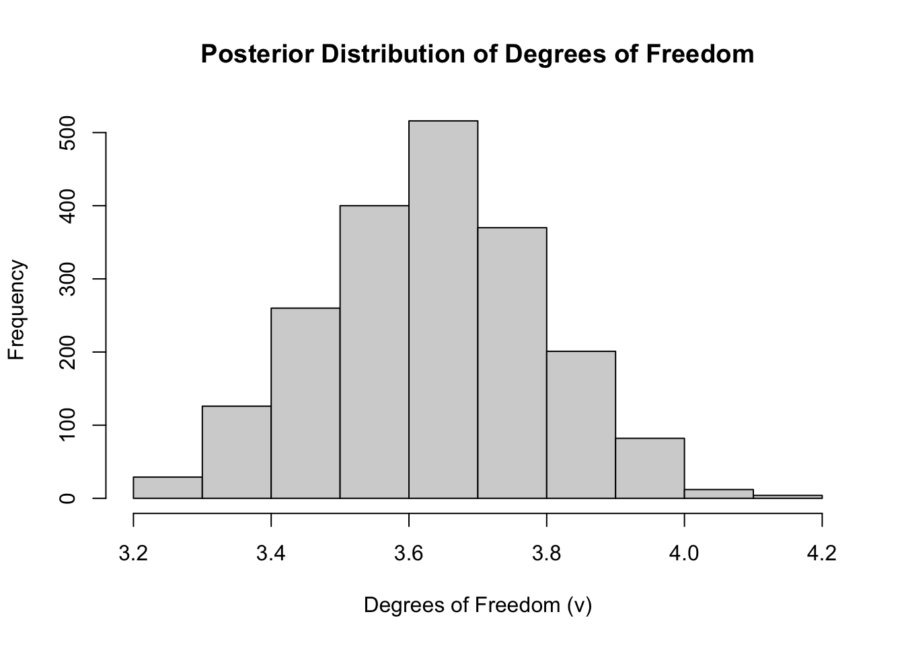

Dixie Effect on Economic Stability in Australia
Abstract. This research project investigates the dynamic effects of the U.S. Dollar (USD) on the Australian economy, with a focus on economic stability. By employing Bayesian Structural Vector Autoregression (SVAR) analysis. This study aims to elucidate the transmission mechanisms of USD fluctuations through three channels: GDP growth, inflation, and unemployment. The findings are expected to provide nuanced insights into the macroeconomic interdependencies between the USD and the Australian economy, offering valuable perspectives for policymakers and economic analysts.
Keywords. Bayesian SVAR, USD, Australian economy, inflation, economic stability
Introduction
This document presents the design and implementation of a Bayesian Structural Vector Autoregression (SVAR) model. Our focus is on understanding the impact of the Trade Weighted Index (TWI) of the USD on Australian economic indicators: unemployment, inflation, and GDP rate.
Research Proposal Structure
The Question, Objective, and Motivation
Objective: To examine the dynamic effects of a weakening USD on the Australian economy, focusing on changes to the GDP, inflation and unemployment.
Research Question: How does a weakening United States Dollar (USD) influence overall economic stability in Australia?
Motivation: The relationship between the USD and the Australian economy is crucial, given the extensive trade links and financial interactions between the two nations. In light of recent global financial uncertainties, understanding this interplay is essential for crafting informed economic policies and strategies. This research endeavors to dissect the complexities of this economic relationship, aiming to provide insights that could inform both policymakers and market participants.
The US dollar trade weighted index or the USD/AUD exchange rate?
Chen J., Naylor, and Lu (2004) explores the impact of exchange rate movements on firm values in New Zealand, suggesting broader macroeconomic implications. Extending this analysis, J. Chen (2024) discusses the U.S. Dollar Index (USDX, DXY, “Dixie”), which measures the U.S. dollar’s strength against a basket of major trading partner currencies. This index is vital for understanding the U.S. dollar’s overall economic health and its global trade competitiveness.
Using the USD Index is preferred over the USD/AUD exchange rate because it provides a more comprehensive view of the US dollar’s strength by comparing it against a basket of currencies from major trading partners. This broader perspective reflects overall trade competitiveness and economic impacts more accurately than the USD/AUD rate, which only measures the exchange value between two currencies. The USD Index, therefore, offers a better gauge of the US dollar’s performance on a global scale, making it more suitable for analyzing its effect on the economic health of the Australian economy.
What is economic stability?
Economic stability indicates a nation’s economy is in a healthy state, characterized by low and stable inflation, allowing for future financial planning without significant loss of purchasing power. It also involves a moderate unemployment rate, ensuring sufficient employment opportunities without causing wage inflation due to a limited labor pool. Additionally, the economy should experience steady growth with minor fluctuations in output, avoiding major booms and busts. Governments and central banks strive to maintain this stability using fiscal policies, such as taxation and spending, and monetary policies, including adjusting interest rates. Achieving economic stability is challenging as it requires maintaining a balance across various economic indicators. This stability is crucial as it enhances business confidence, boosts consumer spending, and supports overall economic health, with metrics like inflation, unemployment, and GDP growth serving as indicators of economic stability.
Effect of a weak US dollar on the Australian economy
A weaker US Dollar Index typically strengthens the Australian dollar, impacting the Australian economy in several ways:
Inflation: A stronger Australian dollar makes exports less competitive and imports cheaper, potentially decreasing export volumes while reducing inflation through lower import costs.
Unemployment: Reduced foreign investment due to a stronger Australian dollar could slow economic growth and potentially increase unemployment if businesses scale back expansion.
GDP Growth: The trade balance may suffer if reduced export revenues outweigh the benefits of cheaper imports, negatively impacting GDP growth.
Data and Their Properties
In order to conduct a thorough analysis of the impact of USD fluctuations on the Australian economy, this study will utilize a set of time-series data that encapsulates three economic indicators:
Growth Rate in the Australian Gross Domestic Product: Quarterly GDP figures representing the overall economic activity within Australia.
Unemployment Rate: Percentage of the labor force that is currently unemployed and actively seeking employment.
Inflation Rate: Measured by the change in the Consumer Price Index (CPI), reflecting the changes in prices for goods and services.
These indicators will be analyzed against one proxy for the strength of the USD dollar as an international currency.
- USD Trade Weighted Index: monthly index of US dollar major currency trade-weighted index.
Motivation for Data Choice:
The selected variables offer a detailed insight into the economic interactions between the US dollar and the Australian economy, focusing on how trade-weighted indices affect the competitiveness of Australian goods and services internationally. Changes in the US dollar’s strength can significantly impact Australia’s GDP growth, given the substantial trade relations with the United States. Additionally, fluctuations in this index are likely to alter inflation and unemployment rates, key indicators of economic stability that affect purchasing power and consumer spending. This comprehensive approach enables a thorough examination of the international economic dynamics and the overall stability of the Australian economy.
Data Acquisition and Transformation:
The project will analyze data from 1980 to 2019 sourced from official Australian databases, particularly the Reserve Bank of Australia, focusing on the effects of a weakening USD on the Australian economy. Data from before 1980 and post-2019 are excluded due to their irrelevance to current trade relations and distortions from the COVID-19 crisis, respectively. The analysis will use time series data at different frequencies within a Bayesian Structural Vector Autoregression (SVAR) model, requiring preprocessing to match data frequencies.
For our purposes in this initial proposal, the required data will be sourced from official Australian government databases using the readrba R packages. Based on the preliminary results from the project, it might become necessary to entertain a mixed frequency approach.
The first series, the year-end Australian real GDP growth rate, is from the Reserve Bank of Australia (RBA) output and labour statistical tables (Reserve Bank of Australia 2024c). This is a quarterly series, and will not need to be treated for frequency alignment.
As seen in Figure 1, the PACF above, the optimal lag for conducting the augmented Dicky-Fuller (DF) test is 4. A summary of the results of this test can be found in the table below.
Note that the augmented DF test suggests that the series is stationary at the 95% level. There is no need to modify the series. From the DF test results, its is safe to conclude that the GDP_rate series is stationary.
The second series, the year-end change in Australian inflation rate, is from the Reserve Bank of Australia (RBA) inflation and inflation expectations statistical tables (Reserve Bank of Australia (2024d)). This series has been converted from a monthly series into a quarterly series by choosing the relevant months for the beginning of each quarter, starting from March and ending with December.

From Figure 2, an augmented DF test was conducted with 3 lags. Note that the augmented DF test suggests that the series is not stationary at the 95% confidence level. There was a need to take the difference of the series.
The third series, the Australian unemployment rate, is from the Reserve Bank of Australia (RBA) output and labour Statistical tables (Reserve Bank of Australia 2024b). This is a monthly series. The series was converted into a quarterly series by choosing the relevant months for the beginning of each quarter, starting from March and ending with December.

Figure 3 above explains that a lag 4 should be used for the augmented DF test. Note that this test (see Appendix) suggests that the series is not stationary at the 95% confidence level. We therefore use the differenced series.
The fourth series, the USD Index, is also from the Reserve Bank of Australia (RBA) exchange rates statistical tables (Reserve Bank of Australia 2024a). This is a monthly series. The series was converted into a quarterly series by choosing the relevant months for the beginning of each quarter, starting from March and ending with December.

Figure 4 above indicates that a lag 4 should be used for the augmented DF test. The results suggest that the series is not stationary at the 95% confidence level. We therefore use the differenced series.
Augmented Dicky-Fuller test results for the USD Index
| Variable | Test_Statistic | Critical_Value_5pct | |
|---|---|---|---|
| GDP | GDP | -3.872311 | -2.88 |
| CPI | CPI | -2.262783 | -2.88 |
| Unemployment | Unemployment | -1.928571 | -2.88 |
| USD_Index | USD_Index | -1.930479 | -2.88 |
Do we need to use stationary data series
After consultations with Dr. Thomaz Wozniak, my understanding is that it is possible to use unit-root nonstationary variables in dynamic modeling. Based, on this, all rates are used without differencing, and the USD Index is used in logged form, also without differencing.

Model Specification
The above selection and treatment of the data is pivotal to answering the research question: How does a weakening United States Dollar (USD) influence overall economic stability in Australia? By focusing on key economic indicators like the GDP growth rate, unemployment rate, and inflation rate, and comparing these against the USD Trade Weighted Index (TWI), the study strategically addresses the multifaceted impact of USD fluctuations on the Australian economy. The chosen data encapsulate the essential aspects of economic stability, allowing for a nuanced analysis of the interdependencies between the USD’s value and Australian economic health.
This approach is vital for constructing a comprehensive Bayesian Structural Vector Autoregression (SVAR) model. The SVAR model, designed to elucidate the transmission mechanisms of USD fluctuations, relies on accurate, time-aligned, and contextually relevant data to provide meaningful insights. By ensuring the data are stationary and appropriately preprocessed for the chosen analysis timeframe (1980-2019), excluding periods of atypical economic disruption like the COVID-19 crisis, the document ensures that the model’s outputs are reflective of standard economic interactions, enhancing the reliability of the findings.
Furthermore, the data treatment, including the conversion of series to quarterly frequencies and addressing stationarity, directly informs the model equations by ensuring that the inputs reflect genuine economic trends devoid of seasonal or non-stationary noise. This data preparation not only strengthens the study’s methodological framework but also ensures that the SVAR model’s findings will offer actionable insights, enabling policymakers and analysts to base decisions on solid empirical evidence, thereby underlining the importance of investigating the specified problem.
Next, we employ a Bayesian Structural Vector Autoregression (SVAR) model to understand the dynamic relationships among various economic indicators influenced by fluctuations in the United States Dollar (USD) against the Australian Dollar (AUD) (Woźniak 2022). In particular, we follow Bhuiyan (2012) who introduces a Bayesian structural VAR model tailored for Canada, focusing on evaluating the impact of monetary policy shocks, utilizing the overnight rate target as the main policy tool. However, our model differs in that it does not directly account for any fiscal and monetary policy, rather it evaluates the potential of using the US Index to predict the stability of the Australian economy.
Justification for the Selection of the Bayesian SVAR Model
In addressing the dynamics between the United States Dollar (USD) and the Australian economy, we opt for a Bayesian Structural Vector Autoregression (SVAR) model over alternative econometric methodologies for several reasons. Firstly, the SVAR model allows us to incorporate prior knowledge and uncertainties into our analysis, an advantage not readily available in traditional VAR models. This Bayesian approach is particularly beneficial in economic studies where historical data and expert judgment play crucial roles in shaping analysis and expectations.
Furthermore, SVAR models enable us to decipher the structural impacts of economic shocks, such as fluctuations in the USD, on various indicators of economic stability within Australia, including GDP growth, inflation, and unemployment rates. Unlike standard VAR models that treat all innovations as endogenously generated within the system, SVAR models allow us to impose structural restrictions based on economic theory. This is critical for understanding the directionality and magnitude of relationships between variables, thereby offering a more nuanced analysis of economic interdependencies.
Interpretation of the \(B_0\) Matrix in the Bayesian SVAR Model
In our Bayesian SVAR model, the matrix \(B_0\) is pivotal as it encapsulates the contemporaneous relationships between the endogenous variables. Each entry \(b_{ij}\) in the \(B_0\) matrix can be interpreted as the immediate impact of a one-unit shock in variable \(j\) on variable \(i\) within the same time period, holding all other factors constant. This interpretation allows us to understand the intricate web of interactions within the economic system, such as how a sudden change in the USD Index might immediately affect Australia’s GDP growth, inflation, or unemployment rate.
For instance, a positive entry in the row of the GDP growth and in the column of the USD Index would indicate that an instantaneous increase in the USD Index (reflecting a strengthening of the USD) has a positive impact on Australian GDP growth within the same period. Such insights are invaluable for policymakers and analysts seeking to anticipate and mitigate the effects of international monetary fluctuations on domestic economic stability.
This is a 4x1 vector of endogenous variables at time t, where:
- \(USD\_Index\) : Log of the Trade Weighted Index of the US Dollar.
- \(Unemployment\_rate\) : unemployment rate.
- \(Inflation\_rate\) : inflation rate.
- \(GDP\_growth\) : growth rate of GDP.
The SVAR model structure:
- \(B_0\) is a 4X4 matrix representing the contemporaneous relationships between the variables.
- \(B_i\) (for i = 0,1,…,p) are 4x4 matrices representing the lagged effects (where p is the lag order).
- \(u_t\) is a vector of innovations at time \(t\), assumed to follow \(u_t \mid Y_{t-1} \sim N(0, I_N)\), where \(I_N\) is the identity matrix. This implies that shocks are independently and identically distributed with no correlation and a standard normal distribution.
LaTe
\[ Y_t = \begin{bmatrix} USD\_Index_t \\ Inflation\_rate_t \\ Unemployment\_rate_t\\ GDP\_growth_t \end{bmatrix} \]
The Bayesian Structural VAR model can then be written as:
The Bayesian Structural Vector Autoregression (SVAR) model is given by the equation:
\[ B_0 Y_t = b_0 + B_1 Y_{t-1} + \dots + B_p Y_{t-p} + u_t \]
Model Notations:
\(Y_t\): This represents the vector of endogenous variables at time tt. In this context, the vector consists of the Trade Weighted Index of the US Dollar (USD_Index), the unemployment rate, the inflation rate, and the GDP growth rate. These variables are chosen because they represent key indicators of economic stability.
\(B_0\): This is a matrix representing the contemporaneous relationships between the variables in \(Y_t\). In an SVAR model, this matrix helps to understand how shocks to one variable (e.g., USD_Index) can contemporaneously affect other variables (e.g., unemployment, inflation, GDP growth).
\(B_i\) (for i=0,1,…,pi=0,1,…,p): These are matrices representing the lagged effects of the variables on each other. The subscript ii represents the lag order, showing how past values (lags) of each variable in \(Y_t\) influence the current values. In time series analysis, this captures dynamics such as how past economic conditions influence current outcomes.
\(u_t\): This is the vector of errors or shocks at time tt. In the SVAR framework, these are considered unobservable random shocks that affect the endogenous variables. In Bayesian SVAR models, these shocks are also subjected to prior distributions reflecting our beliefs or assumptions before observing the data.
Using the Model to Answer the Research Question:
The model will be used to analyze how fluctuations in the US Trade Weighted Index (representing a weakening or strengthening USD) impact the Australian economy’s stability, specifically through GDP growth, inflation, and unemployment rates. By examining the contemporaneous and lagged relationships between these variables, we can understand the transmission mechanisms of US dollar fluctuations.
To address the research objectives, we will assess the dynamic effects of the USD_Index on Australia’s economic indicators. This involves looking at the impulse response functions (IRFs) and variance decompositions derived from the SVAR model. The IRFs will show how a shock to the US dollar index impacts Australian GDP growth, inflation, and unemployment over time. This directly speaks to the study’s aim to elucidate the transmission mechanisms of such fluctuations.
This analysis will be conducted using a stepwise approach:
Lag Selection: Optimal lags for the variables will be determined based on the general approach in the literature for quarterly data, namely, 12 lags.
Model Estimation: The extended SVAR model, incorporating the selected lags, will be estimated to analyze the interactions between the USD Index and Australian economic indicators.
Estimation Outputs for Interpreting the Research Question:
Posterior Distributions: These reflect the updated beliefs about the model’s parameters after considering the data. We would examine the posterior distributions of the SVAR model parameters, particularly focusing on the coefficients that measure the impact of USD_Index changes on the economic indicators.
Impulse Response Functions (IRFs): IRFs trace the effects of a one-time shock to one of the innovations on the current and future values of the endogenous variables. By analyzing the IRFs, we can interpret how an unexpected change in the US dollar’s value affects Australian economic conditions over time.
Variance Decompositions: These help us understand the proportion of the forecast variance of each endogenous variable that can be attributed to shocks to each variable in the model, including shocks to the USD_Index. This is crucial for assessing the significance of US dollar fluctuations compared to other domestic factors.
Credibility Intervals: Unlike classical confidence intervals, credibility intervals in Bayesian analysis offer a probability statement about the parameter values. Examining these intervals for the effects of interest will provide insights into the certainty of our estimates.
In terms of economic context, understanding the relationship between the US dollar index and Australian economic indicators is vital for policymakers and economic analysts, especially considering the significant trade and financial ties between the two countries. The model helps address the research objectives by providing a structured way to quantify these relationships, thereby informing decisions that could enhance economic stability in response to international currency movements.
For your Bayesian SVAR model examining the impact of the U.S. Dollar on the Australian economy, applying exclusionary restrictions to the \(B_0\) matrix can be guided by economic theory concerning the likely immediate (contemporaneous) effects of one variable on another. In the context of your study, focusing on GDP growth, inflation, and unemployment as responses to changes in the USD Trade Weighted Index, here are some suggestions for structuring these restrictions:
Considerations for \(B_0\) Matrix Exclusionary Restrictions
Using a lower triangular matrix for \(B_0\) in our Bayesian Structural Vector Autoregression (SVAR) model is a common approach in identifying the model. This approach can help ensure that the model is identified under the assumption that the contemporaneous relationships between the variables follow a specific causal ordering. Here’s how we implement and justify this approach along with leveraging the Minnesota prior for testing and imposing restrictions:
Using a Lower Triangular Matrix for \(B_0\)
Advantages
- Causality Assumption: A lower triangular matrix implies that a variable does not contemporaneously affect any variables that come before it in the ordering. This reflects a causal hierarchy among the variables, where earlier variables can affect later ones within the same time period, but not vice versa.
- Model Identification: SVAR models often suffer from identification issues due to the symmetric nature of the covariance matrix of the errors. Using a lower triangular \(B_0\) can help in uniquely determining the model by providing a clear causal path among variables.
How to Implement
Ordering of Variables: Decide the ordering of variables based on economic theory or empirical evidence. For our analysis on the effects of a weakening USD:
- USD Index: As the exogenous shock.
- Inflation Rate: Likely responds quickly to currency value changes due to import prices.
- Unemployment Rate: Might react to changes in economic conditions that are influenced by inflation adjustments.
- GDP Growth: Often considered to respond over a longer period to changes in broader economic indicators.
Matrix Structure: With this ordering, our \(B_0\) matrix would look like:
\(B_0 =\)
\[\begin{bmatrix} b_{11} & 0 & 0 & 0 \\ b_{21} & b_{22} & 0 & 0 \\ b_{31} & b_{32} & b_{33} & 0 \\ b_{41} & b_{42} & b_{43} & b_{44} \end{bmatrix}\]Here, \(b_{ij}\) are parameters to be estimated, with non-zero entries allowed only in the lower triangle, reflecting the immediate impacts as per the assumed causality.
Testing Restrictions Using the Minnesota Prior
Minnesota Prior and Shrinkage
- Role of Minnesota Prior: In Bayesian SVARs, the Minnesota prior typically imposes shrinkage on the parameters, pulling them towards some baseline values (often zero or a random walk hypothesis for autoregressive parameters). This can be particularly useful in imposing and testing exclusion restrictions implicitly through the prior distribution.
- Implementing Shrinkage: We use the Minnesota prior to differentially shrink the off-diagonal elements of \(B_0\) to test whether the data supports the exclusion restrictions. Larger shrinkage (higher prior variance) on certain parameters can test if the unrestricted model significantly deviates from these baseline assumptions.
Steps to Follow
- Specify the Prior: Define the Minnesota prior for each element in \(B_0\) based on how strongly our believe in the causal ordering and immediate impacts.
- Fit the Model: Use Bayesian estimation techniques. We will use the Gibbs sampling proposed by Waggoner and Zha (2003) to fit the SVAR model.
- Analyze the Posterior: Check the posterior distributions of the \(B_0\) elements. If the posterior distributions of certain off-diagonal elements concentrate around zero (or within a close range), it supports the exclusion restrictions under the causal ordering.
- Robustness Checks: Consider alternative orderings or less restrictive priors to ensure robustness of the findings.
This approach not only aids in model identification and ensures adherence to theoretical expectations but also leverages the flexibility of Bayesian methods to incorporate and test economic theory effectively.
Derivation of the Estimation Algorithm
For the basic model as described above, we will proceed as follows:
Model Structure
The SVAR model is expressed as: \(B_0 Y_t = B_+ X_t + u_t\) where: - \(B_0\) contains contemporaneous effects with certain zero restrictions (exclusion restrictions). - \(B_+\) is the matrix comprising the intercept and coefficients of lagged variables. - \(X_t\)includes a constant and lagged values of ( Y ). - \(u_t\) is the error term assumed to be normally distributed.
Exclusion Restrictions
We have specified that each row \(n\) of \(B_0\) can be represented as a product of unrestricted coefficients \(b_n\) and a fixed matrix \(V_n\) of zeros and ones, applying structural constraints to the model.
Likelihood Function
The likelihood function for the model incorporates the determinants and exponentials of quadratic forms, which reflect the usual Gaussian assumptions for the innovations.
The likelihood function usning the Normal-Generalized-Normal (NGN) distribution is detailed below:
\(L(B_+, B_0 \mid Y, X) = \left| \det (B_0) \right|^T \exp \left( -\frac{1}{2} \sum_{n=1}^N \left( b_n V_n Y - B_n X \right) \left( b_n V_n Y - B_n X \right)' \right)\)
Expanded Expression
Expanding the expression within the exponential term:
\(\sum_{n=1}^N \left( b_n V_n Y Y' V_n' b_n' - 2 b_n V_n Y X' B_n' + B_n X X' B_n' \right)\)
And further:
$$
\[\begin{aligned} b_n V_n Y Y' V_n' b_n' - 2 b_n V_n Y X' B_n' + B_n X X' B_n' &= b_n V_n \left( Y Y' - Y X' (X X')^{-1} X Y' \right) V_n' b_n' \\ &\quad + (B_n - b_n V_n \hat{A}) (X X') (B_n - b_n V_n \hat{A})' \end{aligned}\]$$
where \(\hat{A} = YX' (XX')^{-1}\).
Likelihood Function Simplification
The simplified likelihood function can then be presented as:
\(L(B_+, B_0 \mid Y, X) \sim NGN \left( \hat{A}, (X X')^{-1}, (Y Y' - Y X' (X X')^{-1} X Y')^{-1}, T + N \right)\)
Prior and Posterior Distributions
The model uses a Normal-generalized-normal (NGN) distribution approach for the priors. The likelihood and priors are combined to form the posterior distributions, which are sampled using Gibbs sampling.
Natural-Conjugate Prior
The NGN distribution as a natural-conjugate prior:
\[ p(B_+, B_0) \sim NGN \left( B, \Omega, S, \nu \right) \]
\[p(B_+, B_0) = \prod_{n=1}^N p(B_n \mid b_n) \cdot p(b_1, \ldots, b_N) \]
\[p(B_n \mid b_n) \sim N_K \left( b_n V_n B, \Omega \right) \]
\[p(b_1, \ldots, b_N) \propto \left| \det(B_0) \right|^{\nu-N} \exp \left( -\frac{1}{2} \sum_{n=1}^N b_n V_n S^{-1} V_n' b_n' \right) \]
Therefore,
$$ \[\begin{aligned} p(B^+; B_0) &= \left| \det(B_0) \right|^{\underline{\nu}-N} \exp \left\{ -\frac{1}{2} \sum_{n=1}^{N} b_n V_n \underline{S}^{-1} V_n^T b_n^T \right\} \\ &\quad \times \exp \left\{ -\frac{1}{2} \sum_{n=1}^{N} (B_n - b_n V_n \underline{B}) \ \ \underline{\Omega}^{-1} \ \ (B_n - b_n V_n \underline{B})^T \right\} \end{aligned}\]$$
Posterior Distribution
Combining the likelihood and the prior, the posterior distribution:
\[p(B_+, B_0 \mid Y, X) \propto L(B_+, B_0 \mid Y, X) \cdot p(B_+, B_0) \]
\[ \begin{align*} = \left| \det (B_0) \right|^{T+\nu-N} \exp \Bigg( -\frac{1}{2} \sum_{n=1}^N \Bigg( & b_n V_n Y Y' V_n' b_n' - 2 b_n V_n Y X' B_n' + B_n X X' B_n' \\ & + b_n V_n S^{-1} V_n' b_n' + B_n \Omega^{-1} B_n' \\ & - 2 b_n V_n B \Omega^{-1} B_n' + b_n V_n B \Omega^{-1} B' V_n' b_n' \Bigg) \Bigg) \end{align*} \]
The resulting posterior parameters are as follow:
\[ \bar{\Omega} = [XX^T+\underline{{\Omega}} \ ]^{-1} \]
\[ \bar{B} = [YX^T+\underline{B{\Omega}}^{-1}]\bar{\Omega} \]
\[ \bar{S} = [YY^T+\underline{S}^{-1}+ \underline{B{\Omega}}^{-1} \underline{B}^T - \overline{B{\Omega}}^{-1} \bar{B}]^{-1} \] \[ \bar{\nu} = T + \underline{\nu} \]
Using these formulas we can proceed to sample using the Gibbs sampling procedure.
Gibbs Sampling Procedure
Gibbs sampling for this model involves: 1. Sampling the unrestricted coefficients \(b_n\) from their conditional distributions given the data and all other parameters. 2. Sampling \(B_+\), considering the latest draws of \(b_n\) and the data.
Steps to Implement in R
To estimate this model in R, you would generally need to:
- Define the Model Structure:
- We set up matrices \(B_0\) and \(B_+\) based on the given structure and exclusion restrictions.
- We prepare the data matrices \(Y\) and \(X\).
- Initialize Parameters:
- We initialize \(B_0\), \(B_+\), and any other matrices or parameters required for the Gibbs sampling.
- Implement Gibbs Sampler:
- We write loops to update each parameter iteratively based on its conditional posterior distribution. This includes:
- Computing residuals and other derived quantities needed to sample \(b_n\) and \(B_+\).
- Drawing from the conditional distributions using function
rmvnormfor multivariate normal distributions.
- We write loops to update each parameter iteratively based on its conditional posterior distribution. This includes:
- Normalize and Summarize Results:
- After obtaining the draws, we normalize and summarize the posterior distributions to get estimates and credible intervals for the parameters.
Model Testing Using A Random Walk
We use a random walk to generate a \(Y\) matrix with one lag, and with 300 observations over four variables, to check whether the estimation algorithm is able to reproduce the random walk structure. In other words, we expect that \(B_0\) will equal an identity matrix, the intercept will equal zero, and the remaining part of the \(B_+\) matrix will also be an identity matrix.
We used 100 iterations for the burn-in phase to allow the algorithm to converge, then used 5000 iteration for the estimation.
The estimated \(B_0\) and \(B_+\) are shown below.
[1] "Random Walk Testing Normalized B0 matrix" [,1] [,2] [,3] [,4]
[1,] 0.9728583 0.00000000 0.0000000 0.00000
[2,] -0.1267191 0.96516311 0.0000000 0.00000
[3,] -0.1621194 0.04927624 0.9500058 0.00000
[4,] 0.1478713 0.20364697 -0.1405565 1.03715[1] "Random Walk Testing B plus matrix" [,1] [,2] [,3] [,4] [,5]
[1,] -0.05898178 0.9735611 -0.001227272 0.0007696115 -0.0029042795
[2,] 0.01791258 -0.1263124 0.968449637 -0.0021262431 -0.0004927716
[3,] 0.11256074 -0.1601484 0.046759710 0.9517307018 -0.0018166391
[4,] -0.10339375 0.1527693 0.203969989 -0.1391348283 1.0418781804There is a clear convergence of the diagonal of each matrix towards one. The other elements in these matrices are also approaching zero. We have enough evidence to see that the algorithm is able to estimate the random walk process.
Estimation of the Basic Model
We now repeat the same steps above to estimate the \(B_0\) and \(B_+\) matrices for the basic model.
[1] "Basic Model Normalized B0 matrix" [,1] [,2] [,3] [,4]
[1,] 30.461932 0.0000000 0.000000 0.000000
[2,] -1.763858 1.4323095 0.000000 0.000000
[3,] -1.438309 0.3061411 4.752266 0.000000
[4,] -1.204530 0.1740482 1.305793 1.050811[1] "Basic Model B plus matrix" [,1] [,2] [,3] [,4] [,5] [,6]
[1,] -0.41739368 30.497166 -0.09815621 -0.01282362 -0.06318059 0.04420088
[2,] 0.38442998 -1.954272 1.45504700 -0.07446228 0.03894644 -0.01860981
[3,] 0.43319445 -1.340620 0.36365513 4.71726880 -0.29856451 0.04481766
[4,] 0.05933598 1.187018 -0.13070285 -1.38834668 -0.84035844 -0.05636738
[,7] [,8] [,9] [,10] [,11]
[1,] 0.07693879 0.001745547 -0.004594576 -0.021155991 0.010202038
[2,] -0.02252209 0.012002792 0.056135767 0.052375942 -0.025077703
[3,] 0.05366510 -0.058665367 -0.025029602 0.037977834 0.006067512
[4,] 0.02298112 -0.003318563 0.079916708 0.009831926 -0.053758833
[,12] [,13] [,14] [,15] [,16]
[1,] 0.016620579 -0.035525979 -0.048766063 -0.010738752 0.006166533
[2,] 0.023978029 -0.006928126 0.023543722 -0.060370934 0.050577024
[3,] 0.002689569 0.056092015 0.035444445 -0.017995333 -0.034996965
[4,] 0.057883807 0.044525554 0.006890253 -0.006522255 -0.021630766
[,17] [,18] [,19] [,20] [,21]
[1,] 0.002342628 0.03255433 0.009266198 0.0151449479 -0.006922923
[2,] 0.003352795 -0.04187782 -0.034700095 -0.0098500313 0.045009200
[3,] 0.025931771 -0.02550555 0.008196445 -0.0004320509 -0.012523496
[4,] -0.032332311 0.02044696 -0.014484360 -0.0227600358 -0.001690514
[,22] [,23] [,24] [,25] [,26] [,27]
[1,] 0.011406814 0.010137226 -0.006342152 0.012604179 0.01691855 0.003999127
[2,] -0.028102659 0.002610849 0.024212837 0.020523712 0.02571048 0.002391617
[3,] -0.034339009 0.010603023 0.016622588 0.004257276 -0.01835961 0.012085326
[4,] 0.002279106 -0.005692063 -0.007843236 0.037575373 -0.01559327 0.012839714
[,28] [,29] [,30] [,31] [,32]
[1,] -0.010845417 -0.013606607 -0.0006546223 0.002867436 0.003021949
[2,] 0.002109943 0.000242223 0.0251061766 0.001035144 0.028834123
[3,] -0.001027048 -0.022954595 0.0048104347 -0.004465723 -0.003708059
[4,] -0.002474451 0.005257047 -0.0028927564 0.010279593 -0.007151757
[,33] [,34] [,35] [,36] [,37]
[1,] 0.008758411 -0.001033115 0.009580385 -0.002394363 0.001743295
[2,] -0.023010092 0.004687213 0.004991398 -0.007035643 0.016206818
[3,] 0.010997569 0.007141848 0.003853388 0.009273117 0.009952117
[4,] -0.001359852 -0.028256032 0.002107404 0.008110791 -0.003940558
[,38] [,39] [,40] [,41] [,42]
[1,] 0.017217366 -0.004127158 -0.008495014 0.0209186879 0.004922294
[2,] -0.001678399 -0.026196430 0.005908768 0.0004971562 -0.003536107
[3,] -0.017980150 -0.006912056 0.010555691 -0.0262989126 0.004060953
[4,] -0.015414477 -0.011845088 -0.018202029 0.0243254516 -0.013616733
[,43] [,44] [,45] [,46] [,47]
[1,] -0.004569225 0.014275254 -0.0040274109 0.006684280 -0.012956157
[2,] 0.015036674 -0.001929374 0.0004556531 -0.014372713 0.018103709
[3,] -0.007971643 0.003875133 0.0084037200 0.004841711 0.001816757
[4,] 0.002639304 -0.004506027 0.0036432507 -0.006738149 -0.009519107
[,48] [,49]
[1,] 0.005267069 0.012170750
[2,] -0.012783292 -0.002004963
[3,] -0.008048030 -0.019487036
[4,] 0.017874412 -0.014244022[1] "Standard deviation of the basic model B0" [,1] [,2] [,3] [,4]
[1,] 1.756808 0.00000000 0.0000000 0.00000000
[2,] 3.786108 0.08027997 0.0000000 0.00000000
[3,] 2.530589 0.11066415 0.2635913 0.00000000
[4,] 2.486560 0.11321713 0.3782064 0.06664712[1] "Standard deviation of the basic model Bp" [,1] [,2] [,3] [,4] [,5] [,6] [,7]
[1,] 0.6150690 30.522432 0.07608356 0.06480125 0.06245976 0.04824870 0.04423000
[2,] 0.5849091 3.908892 1.33812856 0.07427399 0.05802525 0.05007890 0.06004942
[3,] 0.9797811 3.839361 0.28241050 4.42429221 0.27301247 0.04882430 0.04876773
[4,] 0.6740056 3.245162 0.16719898 1.86610845 0.91659041 0.04903131 0.06054788
[,8] [,9] [,10] [,11] [,12] [,13]
[1,] 0.04617663 0.04222097 0.03301731 0.03182278 0.03259048 0.02972020
[2,] 0.04574935 0.05659027 0.03323687 0.04329937 0.03218250 0.06436517
[3,] 0.05384334 0.04533850 0.03296776 0.03305814 0.03891628 0.03887228
[4,] 0.05030707 0.08199686 0.03350201 0.03156872 0.03300881 0.05485666
[,14] [,15] [,16] [,17] [,18] [,19]
[1,] 0.02485890 0.02377609 0.02461442 0.02501295 0.01981580 0.01961125
[2,] 0.02483552 0.03402946 0.02468057 0.03344676 0.02000594 0.01863053
[3,] 0.02471178 0.02344107 0.02681314 0.02570448 0.01980979 0.01931518
[4,] 0.02535016 0.02411114 0.02505771 0.03464070 0.01989145 0.01902516
[,20] [,21] [,22] [,23] [,24] [,25]
[1,] 0.01943632 0.01984482 0.01680036 0.01617568 0.01636877 0.01646973
[2,] 0.01999626 0.02459998 0.01691807 0.01588762 0.01699245 0.01837740
[3,] 0.02075710 0.01904939 0.01650740 0.01596609 0.01635075 0.01575290
[4,] 0.01985476 0.02130360 0.01688192 0.01612813 0.01637164 0.01600585
[,26] [,27] [,28] [,29] [,30] [,31]
[1,] 0.01438789 0.01385327 0.01418521 0.01460273 0.01243947 0.01220533
[2,] 0.01421851 0.01375651 0.01488323 0.01384429 0.01253317 0.01217220
[3,] 0.01426095 0.01357697 0.01425226 0.01441137 0.01242217 0.01210688
[4,] 0.01464028 0.01374216 0.01408571 0.01361193 0.01233818 0.01195612
[,32] [,33] [,34] [,35] [,36] [,37]
[1,] 0.01229743 0.01266988 0.01122549 0.01092438 0.01093521 0.01119364
[2,] 0.01286976 0.01218874 0.01105590 0.01094058 0.01138697 0.01100418
[3,] 0.01235588 0.01247543 0.01105512 0.01116756 0.01096360 0.01095348
[4,] 0.01235590 0.01235293 0.01135446 0.01090276 0.01102126 0.01092312
[,38] [,39] [,40] [,41] [,42] [,43]
[1,] 0.010122095 0.009979816 0.009822018 0.009799725 0.009066644 0.009282076
[2,] 0.010022892 0.010180633 0.009954878 0.009915613 0.009240461 0.009538818
[3,] 0.010137342 0.010287337 0.009956920 0.009876818 0.009106357 0.009696848
[4,] 0.009922816 0.009849198 0.009845776 0.009933119 0.009212275 0.008928109
[,44] [,45] [,46] [,47] [,48] [,49]
[1,] 0.009172453 0.009558172 0.008337636 0.008454314 0.008311495 0.008765217
[2,] 0.008962888 0.009052972 0.008384788 0.008714335 0.008260164 0.008679637
[3,] 0.009008892 0.009352522 0.008289016 0.008623886 0.008254273 0.008380635
[4,] 0.009050966 0.008950499 0.008413821 0.008209328 0.008314165 0.008278619
Model Extension: Solving the Identification Problem Using a Non-Normality Approach
We use a t-distribution to model the error terms. Given difficulties with a direct estimation of the t-distribution, we proceed as follows.
The current approach is as follows:
\[ \begin{aligned} p(B_0, B_+, \lambda \mid Y, X) &\propto L(Y \mid X, B_0, B_+, \lambda) \ \ p(B_0, B_+, \lambda) \\ &= L(Y \mid X, B_0, B_+, \lambda) \ \ p(B_0, B_+) \ \ p(\lambda) \end{aligned} \] Where, as under the basic model:
\[ \begin{aligned} p(B^+; B_0) &= \left| \det(B_0) \right|^{\underline{\nu}-N} \exp \left\{ -\frac{1}{2} \sum_{n=1}^{N} b_n V_n \underline{S}^{-1} V_n^T b_n^T \right\} \\ &\quad \times \exp \left\{ -\frac{1}{2} \sum_{n=1}^{N} (B_n - b_n V_n \underline{B}) \ \ \underline{\Omega}^{-1} \ \ (B_n - b_n V_n \underline{B})^T \right\} \end{aligned} \]
To evaluate the overall kernel for the extended Bayesian Structural Vector Autoregression (SVAR) model where the error term \(u_t\) follows a distribution \(N(0, \lambda I_N)\) and \(\lambda\) itself is distributed according to an Inverse Gamma square (IG2) with parameters \(\nu, \nu\), we need to account for the complexity added by this distribution of the error variance. This changes how the kernel of the likelihood function is formulated and combined with the prior.
Step 1: Formulating the Kernel of the Likelihood Function
With the error term \(u_t \sim N(0, \lambda I_N)\), the likelihood function’s kernel, incorporating the variance parameter \(\lambda\), becomes: \[ L(Y \mid X, B_0, B_+, \lambda) = \text{det}(B_0)^T \exp\left(-\frac{1}{2\lambda} \sum_{n=1}^N (b_nV_nY - B_nX)(b_nV_nY - B_nX)^T\right) \]
Step 2: Estimating \(\lambda\)
Since \(\lambda\) is a random variable following \(\lambda \sim IG2(\nu, \nu)\), its effect can be sampled from the density function for \(\lambda\):
\[ p(\lambda) = \frac{(\nu/2)^{\nu/2}}{\Gamma(\nu/2)} \lambda^{-(\nu/2+1)} \exp\left(-\frac{\nu}{2\lambda}\right) \] We can use the rinvgamma() function to sample this \(\lambda\). In the estimation process for this extended model, we sample 5000 times from the IG2 distribution and use the mean value for \(\lambda\).
Step 3: Evaluating the Kernel
We use the posterior degrees of freedom to estimate the posterior variance of the error terms:
\[ \bar{\nu} = T + \underline{\nu} \]
\[ \bar{\lambda} = \operatorname{IG2}(\bar{\nu}, \bar{\nu}) \]
Step 4: Combining with the Prior
Assuming the prior \(p(B^+; B_0)\) as given or formulated according to specific assumptions (such as independence, Gaussian priors for coefficients, etc.), the full posterior kernel combining this likelihood with the prior can be approached as:
\[ p(B_+; B_0 \mid Y; X) \propto p(Y \mid X, B_+, B_0) \times p(B_+; B_0) \]
This expression must often be evaluated or sampled using computational Bayesian techniques, such as Markov Chain Monte Carlo (MCMC), especially given the integrative step required for \(\lambda\).
We can obtain the following posterior formulas similar to the basic model. Note that we use \(\underline{\Omega} = \underline{\lambda\Omega}\) in the following equations:
\[ \bar{\Omega} = [\bar{\lambda}^{-1} XX^T+ \underline{{\Omega}} \ ]^{-1} \]
\[ \bar{B} = [\bar{\lambda}^{-1} YX^T+\underline{B{\Omega}}^{-1}]\bar{\Omega} \]
\[ \bar{S} = [\bar{\lambda}^{-1} YY^T+\underline{S}^{-1}+ \underline{B{\Omega}}^{-1} \underline{B}^T - \overline{B{\Omega}}^{-1} \bar{B}]^{-1} \]
[1] "Extended Model Normalized B0 matrix" [,1] [,2] [,3] [,4]
[1,] 0.49268896 0.000000000 0.00000000 0.00000000
[2,] 0.08461094 0.024041167 0.00000000 0.00000000
[3,] 0.09443171 0.010758571 0.07928912 0.00000000
[4,] 0.03887464 0.004437302 0.02032142 0.01931475[1] "Extended Model B plus matrix" [,1] [,2] [,3] [,4] [,5] [,6]
[1,] 0.20303881 0.56570694 0.000942813 -0.007545345 -0.006088107 -0.094521631
[2,] -0.08733913 0.05990652 0.023512583 -0.002141813 -0.002391387 0.002773907
[3,] 0.20292463 0.09615581 0.010676398 0.082888241 -0.009764247 -0.042052249
[4,] 0.02577663 0.01217789 0.006604355 -0.005761804 -0.011458718 -0.024086728
[,7] [,8] [,9] [,10] [,11]
[1,] -0.0020160249 -0.002741483 0.005824981 0.003879409 0.006920008
[2,] 0.0002961902 0.003921306 0.001530673 0.011543277 0.001978643
[3,] 0.0043165766 0.015127093 0.006841913 0.023888275 0.001011773
[4,] -0.0098757084 -0.003766999 0.002086858 -0.016538509 -0.002726470
[,12] [,13] [,14] [,15] [,16]
[1,] 0.017199919 -0.0014269894 0.006496045 -0.007544938 -0.002008774
[2,] 0.004369795 0.0057933068 0.020160684 -0.015514633 -0.014533032
[3,] -0.026753215 0.0016361030 -0.018151452 -0.012105094 0.007478053
[4,] -0.015841205 -0.0008135773 0.003068357 0.006278125 0.004037175
[,17] [,18] [,19] [,20] [,21]
[1,] 0.0009286978 -0.007718854 5.264153e-03 -0.015429252 -0.0068104789
[2,] -0.0046819022 0.009316530 1.142362e-02 0.005516018 -0.0009551295
[3,] 0.0026182331 -0.010814817 9.577844e-03 -0.002136104 -0.0073334998
[4,] 0.0073846604 -0.018890234 2.459662e-05 -0.004299493 -0.0080240855
[,22] [,23] [,24] [,25] [,26]
[1,] 0.022911921 0.001364009 0.022610713 0.008242149 -0.029940247
[2,] -0.011757000 0.004221917 -0.003121520 0.004669205 -0.010277674
[3,] -0.005313592 -0.001742438 -0.001265226 0.002802807 -0.002307655
[4,] -0.009280539 -0.002848072 0.015905553 0.001932964 0.002798593
[,27] [,28] [,29] [,30] [,31]
[1,] -0.001382958 -0.005343584 -0.002301773 -0.013427773 -0.005632849
[2,] -0.001574291 0.015252305 0.003451894 0.023498267 -0.008167367
[3,] -0.002263019 0.002753669 -0.001035283 0.014930970 -0.003586556
[4,] -0.003001626 -0.001920396 -0.001639858 -0.005623841 0.005306120
[,32] [,33] [,34] [,35] [,36]
[1,] -0.008817665 -0.001492439 -0.0008582587 0.007503648 -0.0007819065
[2,] 0.004461464 -0.002552686 -0.0124473766 0.008055241 -0.0074643266
[3,] -0.004738673 0.004004610 -0.0031261118 0.007918920 0.0111073608
[4,] -0.016710822 0.003716872 -0.0003520622 -0.004572362 -0.0124991037
[,37] [,38] [,39] [,40] [,41]
[1,] -0.0051524336 -0.008293364 -0.0034661799 0.0044181659 0.005013990
[2,] 0.0006397632 0.001652183 -0.0001061572 0.0065571463 0.003479846
[3,] -0.0049501946 0.008591875 -0.0013573026 0.0004855074 0.002826354
[4,] -0.0047070558 0.007494096 -0.0006794230 0.0066436834 -0.002584218
[,42] [,43] [,44] [,45] [,46]
[1,] 0.009515791 -0.0014900008 0.003873255 -4.676034e-05 -0.007286565
[2,] -0.001779609 -0.0005375308 -0.007098904 7.967515e-04 0.012037012
[3,] -0.009018964 -0.0012564327 -0.008140798 1.747684e-03 -0.004487427
[4,] 0.004095321 -0.0005407952 0.001865838 -4.309607e-04 -0.001011719
[,47] [,48] [,49]
[1,] 0.0006162029 -0.003696456 0.0002774875
[2,] -0.0027467461 -0.007516710 -0.0035723136
[3,] 0.0017289501 0.001149854 0.0010033120
[4,] 0.0030383436 0.009850541 0.0010309214[1] "Standard deviation of the extended model B0" [,1] [,2] [,3] [,4]
[1,] 0.02768649 0.000000000 0.000000000 0.000000000
[2,] 0.07214468 0.001553420 0.000000000 0.000000000
[3,] 0.03950674 0.002065458 0.004658990 0.000000000
[4,] 0.03888636 0.002079884 0.006741371 0.001276403[1] "Standard deviation of the extended model Bp" [,1] [,2] [,3] [,4] [,5] [,6]
[1,] 0.13908951 0.53943355 0.002032654 0.007032908 0.003074807 0.07642442
[2,] 0.10865426 0.08924930 0.025559562 0.006694026 0.002286876 0.03742412
[3,] 0.13531714 0.07346585 0.004575285 0.089697501 0.007660448 0.03591346
[4,] 0.06803507 0.05299104 0.005235922 0.013880763 0.015304265 0.03475589
[,7] [,8] [,9] [,10] [,11] [,12]
[1,] 0.002893549 0.01769166 0.003102493 0.02685214 0.004901072 0.01922940
[2,] 0.002914010 0.01125075 0.002363445 0.03165724 0.002948406 0.01031076
[3,] 0.004330257 0.00933031 0.003840456 0.02648091 0.002998972 0.01853925
[4,] 0.005956452 0.01397300 0.002540466 0.02766360 0.005873537 0.01021543
[,13] [,14] [,15] [,16] [,17] [,18]
[1,] 0.002286811 0.02060173 0.006451255 0.008466408 0.002686526 0.01794854
[2,] 0.006275224 0.02196005 0.013521426 0.010524639 0.003276267 0.01747166
[3,] 0.003075015 0.02175340 0.004922772 0.008669247 0.002543800 0.02006341
[4,] 0.002917522 0.02086055 0.004878704 0.008492020 0.012685389 0.01826996
[,19] [,20] [,21] [,22] [,23] [,24]
[1,] 0.004665421 0.009118564 0.002426548 0.01486186 0.003108595 0.008064452
[2,] 0.013139895 0.016610385 0.002914961 0.01468238 0.003205830 0.007834756
[3,] 0.006134929 0.010837397 0.005487296 0.01666572 0.003592202 0.011806467
[4,] 0.004569440 0.008171921 0.013557120 0.01538292 0.004510378 0.010961293
[,25] [,26] [,27] [,28] [,29] [,30]
[1,] 0.002785903 0.01409750 0.003320595 0.007420252 0.002522533 0.01421803
[2,] 0.005855013 0.01299622 0.003245642 0.021375455 0.003264496 0.01343542
[3,] 0.002783984 0.01304220 0.004024971 0.007558841 0.002656567 0.01137573
[4,] 0.002762794 0.01309632 0.005500550 0.007428645 0.002533245 0.01172994
[,31] [,32] [,33] [,34] [,35] [,36]
[1,] 0.002783442 0.006818726 0.002240904 0.01275040 0.003355728 0.007105153
[2,] 0.005175184 0.007828485 0.002250959 0.01030497 0.005296930 0.008287953
[3,] 0.004475195 0.009076953 0.002634700 0.01056860 0.006966057 0.009885872
[4,] 0.005023865 0.008919432 0.005745581 0.01054022 0.002599588 0.010139940
[,37] [,38] [,39] [,40] [,41] [,42]
[1,] 0.003394379 0.009361380 0.002949189 0.006739067 0.002071975 0.008355534
[2,] 0.002286967 0.009383577 0.002812035 0.007453310 0.005510406 0.008718078
[3,] 0.003758478 0.009223902 0.002471385 0.009157167 0.002588595 0.009087298
[4,] 0.005470833 0.012771615 0.002626957 0.008295428 0.002909235 0.009726754
[,43] [,44] [,45] [,46] [,47] [,48]
[1,] 0.003025602 0.006310704 0.002731092 0.007607637 0.002313464 0.004767382
[2,] 0.002857922 0.010225237 0.002109149 0.007928854 0.003627928 0.007486316
[3,] 0.003011635 0.006241848 0.006040690 0.008745996 0.001741828 0.005552474
[4,] 0.003161678 0.008144443 0.002091976 0.007642735 0.002819664 0.009435495
[,49]
[1,] 0.001505609
[2,] 0.004049852
[3,] 0.001624138
[4,] 0.001842308
Exteions II: Estimating the \(\nu\) parameter
We use a Metropolis-Hastings Algorithm to estimate the \(\nu\) parameter before using it to obtain the updated \(\lambda\) for simulating error terms with a t-distribution.
[1] 4 4[1] "initial_nu"[1] 4 Min. 1st Qu. Median Mean 3rd Qu. Max.
3.207 3.518 3.637 3.633 3.738 4.134 
[1] 3.675[1] "Extension II Model Normalized B0 matrix" [,1] [,2] [,3] [,4]
[1,] 0.47966908 0.000000000 0.00000000 0.00000000
[2,] -0.07441634 0.022550017 0.00000000 0.00000000
[3,] 0.03128232 0.007589233 0.08268073 0.00000000
[4,] -0.02124902 0.005000220 0.03927562 0.02281283[1] "Extension II Model B plus matrix" [,1] [,2] [,3] [,4] [,5]
[1,] -0.137751282 -0.563899373 -0.0002083313 -0.004556601 0.0021363956
[2,] -0.095649209 -0.105533324 0.0234429356 -0.008721784 -0.0004397914
[3,] -0.056445813 -0.086144549 -0.0088077506 -0.088156211 0.0077129901
[4,] 0.002584625 0.003706781 0.0018111356 -0.024097209 -0.0155004583
[,6] [,7] [,8] [,9] [,10]
[1,] 0.092335015 0.0009136189 0.02139663 0.0005011618 0.003502084
[2,] 0.006127108 0.0004744542 0.02355744 0.0012753125 -0.003556432
[3,] 0.039324234 -0.0030483353 -0.01175666 -0.0026467041 -0.019296057
[4,] 0.025703274 -0.0076827348 -0.01535922 -0.0015898769 -0.011133537
[,11] [,12] [,13] [,14] [,15]
[1,] -0.0040357661 -0.013383550 -0.003553733 0.014866242 0.004964155
[2,] -0.0027426479 -0.013411147 0.001981975 0.036044717 -0.007820137
[3,] 0.0051788401 0.019834423 -0.004456215 -0.003283003 0.002727167
[4,] -0.0006322818 0.007037025 0.003509238 0.015984660 0.001884115
[,16] [,17] [,18] [,19] [,20]
[1,] -0.013184410 -2.910455e-04 -0.005116104 -0.002680140 0.010090320
[2,] 0.002823342 9.330674e-05 0.011570497 0.007135945 -0.009463113
[3,] 0.002136412 -1.912538e-03 0.024470296 -0.007268558 -0.003933076
[4,] -0.003459855 1.188517e-02 -0.004646977 0.005166944 -0.011127075
[,21] [,22] [,23] [,24] [,25]
[1,] 0.0007198431 -0.010209712 -0.004205207 -0.009946798 8.706692e-05
[2,] -0.0033137202 -0.018367621 0.003311789 -0.012999576 4.902172e-03
[3,] 0.0092920232 0.036624059 0.003903150 0.014708624 -3.446046e-03
[4,] -0.0115226250 0.008875391 -0.004631850 0.014167245 4.878411e-04
[,26] [,27] [,28] [,29] [,30]
[1,] -0.022102127 0.0028330526 0.008948454 0.0003151250 0.0130103526
[2,] -0.004825559 -0.0018025505 0.027057448 -0.0028027912 0.0118678611
[3,] -0.029675470 0.0007698362 -0.013610540 -0.0004744179 0.0082927576
[4,] -0.010473084 -0.0017469941 0.003246248 0.0047464924 -0.0003042488
[,31] [,32] [,33] [,34] [,35]
[1,] 0.001493571 -0.0008382381 -0.0027623441 0.021455224 -0.002620049
[2,] -0.002513539 -0.0006357615 0.0028194890 0.015000463 0.000897055
[3,] 0.004628809 0.0068990716 -0.0019191152 -0.014616615 -0.007223056
[4,] 0.002349945 0.0007934733 0.0009309635 0.007009354 0.001973201
[,36] [,37] [,38] [,39] [,40]
[1,] 0.002575395 0.0028930198 0.011692951 -0.0006048265 -0.000602271
[2,] 0.003823125 -0.0004632711 0.006853202 0.0016538018 0.005271240
[3,] -0.007282268 0.0018859123 0.007049337 0.0004921080 -0.004483283
[4,] -0.019487568 -0.0006794738 -0.014524411 -0.0030301473 -0.005342255
[,41] [,42] [,43] [,44] [,45]
[1,] 1.903550e-03 -0.001765805 0.0056842443 -0.0008544807 -0.002111888
[2,] 5.324473e-03 -0.005703989 0.0015423442 -0.0200872506 -0.001309644
[3,] -4.428957e-05 0.006826162 -0.0003925555 0.0012552996 -0.003042023
[4,] -2.499503e-03 -0.010441776 -0.0018636472 0.0138882523 -0.001106901
[,46] [,47] [,48] [,49]
[1,] -1.279903e-05 -2.687256e-03 -5.516999e-05 -0.001894524
[2,] -2.474631e-03 -3.617799e-03 1.761125e-03 -0.003342183
[3,] 1.148865e-02 6.499332e-05 2.959999e-03 -0.001278124
[4,] 5.673254e-03 1.617787e-03 -1.803646e-03 0.001486783[1] "Standard deviation of the Extension II model B0" [,1] [,2] [,3] [,4]
[1,] 0.02647379 0.000000000 0.000000000 0.000000000
[2,] 0.06886211 0.001497955 0.000000000 0.000000000
[3,] 0.03809883 0.001982281 0.004485953 0.000000000
[4,] 0.03758417 0.002020146 0.006436257 0.001215056[1] "Standard deviation of the Extension II model Bp" [,1] [,2] [,3] [,4] [,5] [,6]
[1,] 0.13332762 0.52952731 0.001945827 0.006760546 0.002964656 0.07864048
[2,] 0.10560573 0.08658207 0.024995053 0.006301389 0.002195137 0.03644720
[3,] 0.13249060 0.07255761 0.004424415 0.087796653 0.007446459 0.03576026
[4,] 0.06710621 0.05184960 0.005069094 0.013131973 0.014966847 0.03487142
[,7] [,8] [,9] [,10] [,11] [,12]
[1,] 0.002822474 0.017020730 0.002995427 0.02721144 0.004743466 0.018573241
[2,] 0.002731629 0.010779397 0.002251238 0.03144381 0.002767382 0.009765679
[3,] 0.004110380 0.009055469 0.003730889 0.02610593 0.002835476 0.018086052
[4,] 0.005858123 0.013808525 0.002392753 0.02683960 0.005736820 0.009904225
[,13] [,14] [,15] [,16] [,17] [,18]
[1,] 0.002162279 0.02067145 0.006351853 0.008083818 0.002628779 0.01836274
[2,] 0.006156663 0.02232888 0.013358819 0.010294967 0.003170491 0.01714136
[3,] 0.002978580 0.02147254 0.004684179 0.008407680 0.002418628 0.02038662
[4,] 0.002837738 0.02051869 0.004820065 0.008203703 0.012449674 0.01856645
[,19] [,20] [,21] [,22] [,23] [,24]
[1,] 0.004596898 0.009004530 0.002350582 0.01506855 0.003063564 0.007826641
[2,] 0.012917039 0.016357964 0.002782384 0.01461380 0.003088700 0.007749720
[3,] 0.005985495 0.010616078 0.005292810 0.01670938 0.003525284 0.011645856
[4,] 0.004433048 0.008135548 0.013337931 0.01532294 0.004495629 0.010785912
[,25] [,26] [,27] [,28] [,29] [,30]
[1,] 0.002686696 0.01383320 0.003174550 0.007398240 0.002435079 0.01440340
[2,] 0.005658122 0.01290123 0.003237060 0.021503181 0.003210065 0.01369249
[3,] 0.002680559 0.01280780 0.003907269 0.007293235 0.002540378 0.01130288
[4,] 0.002600054 0.01285613 0.005345387 0.007384886 0.002425771 0.01171962
[,31] [,32] [,33] [,34] [,35] [,36]
[1,] 0.002658525 0.006791720 0.002200251 0.01278833 0.003221887 0.007062647
[2,] 0.005137856 0.007351401 0.002139161 0.01020466 0.005183048 0.008164789
[3,] 0.004374279 0.009047256 0.002465283 0.01045976 0.006839549 0.009882022
[4,] 0.004935830 0.008860357 0.005666766 0.01054978 0.002543276 0.009997302
[,37] [,38] [,39] [,40] [,41] [,42]
[1,] 0.003273850 0.009313156 0.002860149 0.006426657 0.002017988 0.008467968
[2,] 0.002213580 0.009324602 0.002677400 0.007490435 0.005396855 0.008514873
[3,] 0.003579006 0.009007632 0.002404200 0.009018308 0.002536567 0.008891745
[4,] 0.005455874 0.013361253 0.002580914 0.008023932 0.002771550 0.009787761
[,43] [,44] [,45] [,46] [,47] [,48]
[1,] 0.002928772 0.006240287 0.002694495 0.007579154 0.002237841 0.004546795
[2,] 0.002719814 0.010159177 0.002071621 0.007986266 0.003544282 0.007511251
[3,] 0.002910221 0.006207985 0.006006208 0.008736218 0.001669373 0.005541398
[4,] 0.003053739 0.007763829 0.002009705 0.007535478 0.002776971 0.009475066
[,49]
[1,] 0.001434160
[2,] 0.004004960
[3,] 0.001590879
[4,] 0.001768068
Conclusion
The overall kernel for this extended model encapsulates to the random variance \(\lambda\). This allows for a more robust handling of heteroscedasticity and potential non-stationarities in the error terms, offering nuanced insights into the dynamics under study.
In the basic model, all USD Index contemporaneous coefficients are not statistically significant at the standard levels. On the other hand, all these coefficients in the extended model are statistically significant at the 5% level.
The results suggest the following elasticities. According to the basic model, a weaker Dixie is likely to overheat the Australian economy: a drop of 1 per cent in the USD Index would result in roughly 1 per cent increase in inflation, roughly unchanged unemployment, and roughly 1% increase in the GDP growth rate.
On the other hand, the expanded model suggests that a weakening Dixie would result in stagnation in Australia: 1 per cent decrease in the USD Index would result is roughly 0.7 per cent decrease in inflation, roughly 1 per cent decrease in unemployment, and roughly 1 per cent decrease in the GDP growth rate.
| Variable (elasticity w.r.t. USD_Index) | Basic Model | Extended Model | Second Extension |
|---|---|---|---|
| Inflation | -1.2314784 | 3.519419 | -3.3000568 |
| Unemployment | -0.3026575 | 1.190980 | 0.3783508 |
| GDP Growth | -1.1462863 | 2.012692 | -0.9314506 |
References
Bhuiyan, R. 2012. “Monetary Transmission Mechanisms in a Small Open Economy: A Bayesian Structural VAR Approach.” Canadian Journal of Economics 45 (3): 1037–61.
Chen, J. 2024. “What Is the u.s. Dollar Index (USDX) and How to Trade It.” Investopedia. 2024. https://www.investopedia.com/terms/u/usdx.asp.
Chen, J., M. Naylor, and X. Lu. 2004. “Some Insights into the Foreign Exchange Pricing Puzzle: Evidence from a Small Open Economy.” Pacific-Basin Finance Journal 12 (1): 41–64.
Reserve Bank of Australia. 2024a. “F12 Table, Exchange Rates, Series ID FUSXRTWI.” https://www.rba.gov.au/statistics/tables/. 2024.
———. 2024b. “G1 Table, Infaltion and Inflation Expectations, Series ID GCPIAGYP.” https://www.rba.gov.au/statistics/tables/. 2024.
———. 2024c. “H1 Table, GDP Growth Rate, Series ID GGDPCVGDPY.” https://www.rba.gov.au/statistics/tables/. 2024.
———. 2024d. “H5 Table, Labour Force, Series ID GLFSURSA.” https://www.rba.gov.au/statistics/tables/. 2024.
Waggoner, D., and T. Zha. 2003. “A Gibbs Sampler for Structural Vector Autoregressions.” Journal of Economic Dynamics & Control 28 (2): 349–66.
Woźniak, Tomasz. 2022. Bsvars: Bayesian Estimation of Structural Vector Autoregressive Models. R Package. https://cran.r-project.org/package=bsvars.